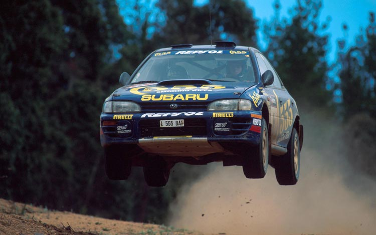
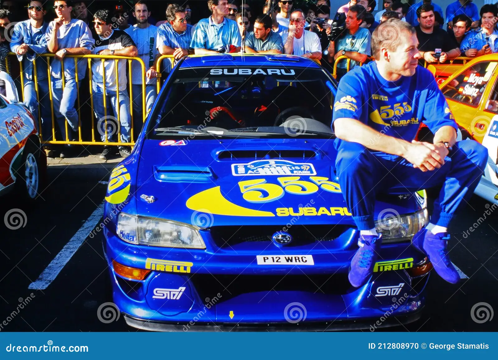
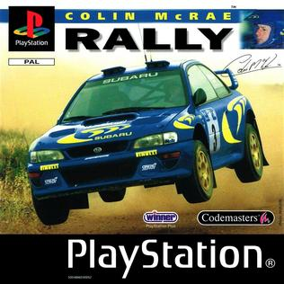
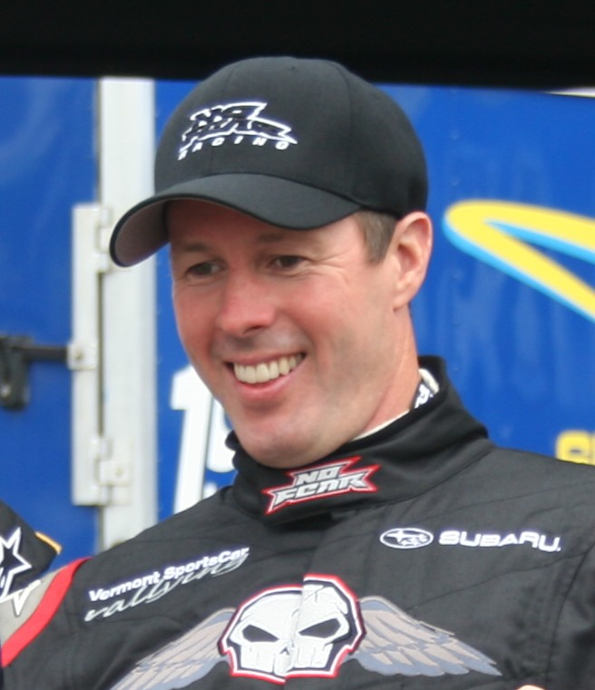

Overview
Purpose
TOur website is a heartfelt tribute to the iconic rally driver, Colin McRae. Through a curated collection of insights, anecdotes, and captivating visuals, we aim to preserve and share the incredible journey of this motorsport legend. From in-depth retrospectives on his championship victories to intimate glimpses into his life off the track, our purpose is to honor, celebrate, and inspire a new generation of fans with the indomitable spirit of Colin McRae. Join us in reviving the memories and exploring the enduring impact of a true rallying pioneer. 🏁🌍 #ColinMcRaeLegacy #RallyingIcon
Audience
For a diverse audience of motorsport enthusiasts, devoted Colin McRae fans, history and sports buffs, gaming communities, students, researchers, and those with a general interest in biographies, 'Remembering Colin McRae' is a digital haven dedicated to preserving and celebrating the life, career, and enduring legacy of the iconic rally driver. Whether you're drawn to the adrenaline of rally racing, intrigued by the captivating history of motorsports, or inspired by the resilience and achievements of remarkable individuals, this website invites a broad spectrum of audiences to explore and relive the indomitable spirit of Colin McRae, a true legend in the world of rallying
Branding
Website Logo
Style Guide
Color Palette
Palette URL:
https://coolors.co/396e94-e7c24f-a43312-381d2a-aabd8c| Primary | Secondary | Accent 1 | Accent 2 | [#005378] | [#ffba42] | [#0b1e33] | [white] |
|---|
Typography
Heading Font: [IM Fell French Canon SC]
Paragraph Font: [Lato, Helvetica, sans-serif]
Normal paragraph example
In the heart of the rally world, Colin McRae's story unfolded like a gripping race through the diverse terrains he conquered. Born in 1968 in Lanark, Scotland, McRae's destiny was intricately tied to the roar of engines and the scent of burning rubber.
Colored paragraph example
In the heart of the rally world, Colin McRae's story unfolded like a gripping race through the diverse terrains he conquered. Born in 1968 in Lanark, Scotland, McRae's destiny was intricately tied to the roar of engines and the scent of burning rubber.
Navigation
Site Map
Content
Home
Welcome
Welcome to "Remembering Colin McRae," a digital tribute to the adrenaline-fueled legacy of rally racing's unforgettable icon. Born in 1968 in Scotland, Colin McRae's name became synonymous with audacious skill and unyielding passion for speed. His journey, etched in the annals of motorsport history, soared to its pinnacle in 1995 when he secured the World Rally Championship Drivers' title – the first Briton to achieve this milestone. McRae's driving style, a perfect blend of precision and abandon, captivated fans worldwide as he fearlessly tackled challenging terrains.
Beyond the rally stages, McRae's magnetic personality and down-to-earth charm endeared him to a global audience. He extended his influence to the virtual realm by lending his name to the renowned "Colin McRae Rally" video game series, allowing enthusiasts to experience the thrills firsthand. Tragically, in 2007, a helicopter crash claimed McRae's life at the age of 39, leaving behind a void in the motorsport community.
"Remembering Colin McRae" invites you on a succinct exploration of his extraordinary journey. Navigate through triumphs, anecdotes, and the enduring impact of a racing legend. Join us in celebrating the legacy of Colin McRae, where every curve tells a story, and every roar of the engine echoes with the spirit of a champion.
Images for the Home page
-




Wins
1995 World Rally Championship (WRC) Title:
The crowning achievement in Colin McRae's career was undoubtedly his victory in the 1995 WRC, where he became the first Briton to secure the Drivers' Championship. Piloting a Subaru Impreza, McRae's exceptional skill and daring driving style led him to triumph, etching his name in history and solidifying his status as a rallying legend.
1994 Network Q RAC Rally:
In 1994, McRae secured a pivotal win at the Network Q RAC Rally, a prestigious event in the WRC calendar. Driving for the Subaru World Rally Team, he showcased his versatility by conquering the challenging and varied terrains of the British rally. This victory contributed significantly to his growing reputation as a force to be reckoned with in the rallying world.
1998 Safari Rally:
McRae's triumph in the 1998 Safari Rally stands out as one of his most memorable victories. The Safari Rally, known for its grueling conditions and unpredictable challenges, demanded both endurance and skill. McRae, driving for the Subaru team, demonstrated his mastery over diverse terrains, showcasing not only speed but also adaptability, making this win a testament to his prowess as a versatile and accomplished rally driver.
Images for the Wins Page
Biography
Early Years and Rise in Rallying (1968 - 1994):
Explore Colin McRae's formative years, growing up in Lanark, Scotland, surrounded by the sights and sounds of motorsport. Delve into his early fascination with racing and the pivotal moments that ignited his passion for rally driving. Follow McRae's progression through local rally events and the development of his distinctive driving style. This section culminates with his breakout years, including his notable victory at the 1994 Network Q RAC Rally.
World Rally Championship Triumph and Global Recognition (1995 - 2000):
This segment focuses on the pinnacle of McRae's career, particularly his historic win in the 1995 World Rally Championship, a milestone that not only elevated him to legendary status but also made him the first British driver to secure the WRC Drivers' title. Explore McRae's dominant years in the championship, his contributions to the Subaru World Rally Team, and the impact of his daring racing style on the global motorsport scene.
Legacy, Influences, and Tragic End (2001 - 2007):
The final part delves into McRae's post-competitive years, highlighting his continued influence on motorsport culture. Explore his contributions to the "Colin McRae Rally" video game series, his role as a mentor and inspiration to aspiring racers, and the enduring legacy he left behind. Unfortunately, this section concludes with the tragic helicopter crash in 2007 that claimed McRae's life, reflecting on the profound impact of his untimely departure on the rallying community.
Images for the Biography Page